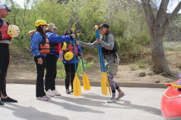

Our mission is to provide unforgettable rafting experiences on the beautiful Vaqueros River in Salta, Argentina. We are committed to offering exciting adventures while promoting safety, teamwork, and respect for nature. Discover the Adventure. Feel the River. Embrace Nature.